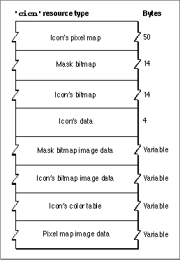

Legacy Document
Important: The information in this document is obsolete and should not be used for new development.
Important: The information in this document is obsolete and should not be used for new development.


The Color Icon Resource
When you want to display a color icon within some element of your application (such as within a menu, an alert box, or a dialog box), you can create a color icon resource. A color icon resource is a resource of type'cicn'. All color icon resources must be marked purgeable, and they must have resource IDs greater than 128. The'cicn'resource was introduced with early versions of Color QuickDraw and is described here for completeness.Using color icon resources, you can create icons similar to the ones that the Finder uses to display your application's files on the desktop; however, the Finder does not use or display any resources that you create of type
'cicn'. Instead, your application uses icon resources of type'cicn'to display icons from within your application. (For information about the small and large 4-bit and 8-bit color icon resources--types'ics4','icl4','ics8', and'icl8'--necessary to define an icon family for the Finder's use, see Inside Macintosh: Macintosh Toolbox Essentials.)Generally, you use color icon resources in menus, alert boxes, and dialog boxes, as described in the chapters "Menu Manager" and "Dialog Manager" in Inside Macintosh: Macintosh Toolbox Essentials. If you provide a color icon (
'cicn') resource with the same resource ID as an icon ('ICON') resource, the Menu Manager and the Dialog Manager display the color icon instead of the black-and-white icon for users with color monitors. For information about drawing color icons without the aid of the Menu Manager or Dialog Manager (for example, to draw an icon in a window), see the chapter "Icon Utilities" in Inside Macintosh: More Macintosh Toolbox.You can use a high-level tool such as the ResEdit application to create color icon resources. You can then use the DeRez decompiler to convert your color icon resources into Rez input when necessary.
The compiled output format for a
'cicn'resource is illustrated in Figure 4-18.Figure 4-18 Format of a compiled color icon (
'cicn') resource
The compiled version of a'cicn'resource contains the following elements:
See the chapter "Icon Utilities" in Inside Macintosh: More Macintosh Toolbox for information about Macintosh Toolbox routines available to help you display icons.
- A pixel map. This pixel map describes the image when drawing the icon on a color screen.
- A bitmap for the icon's mask.
- A bitmap for the icon. This contains the image to use when drawing the icon to a 1-bit screen.
- Icon data.
- The bitmap image data for the icon's mask.
- The bitmap image data for the bitmap to be used on 1-bit screens. It may be
NIL.- A color table containing the color information for the icon's pixel map.
- The image data for the pixel map.